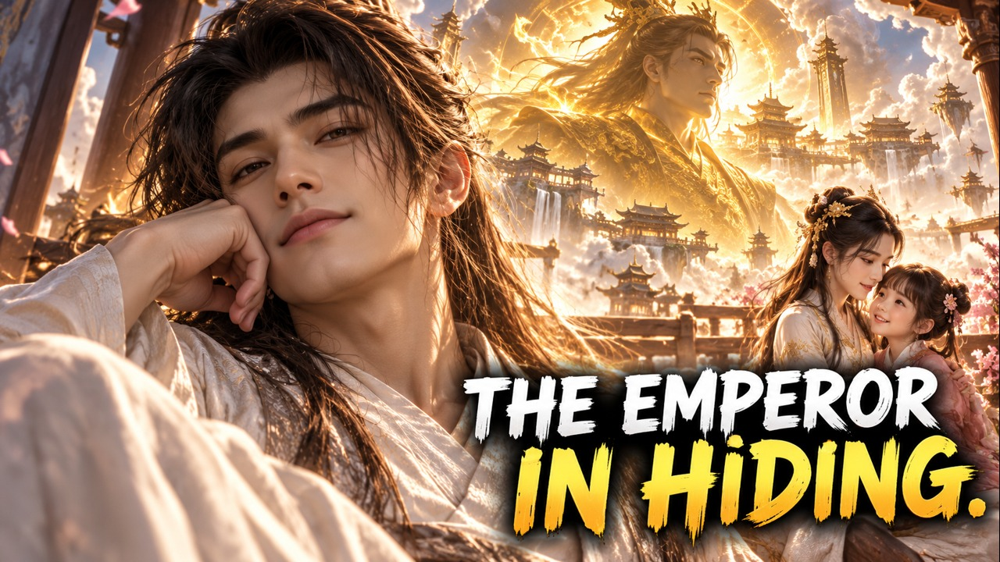
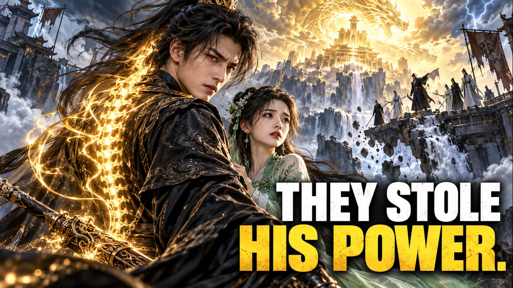
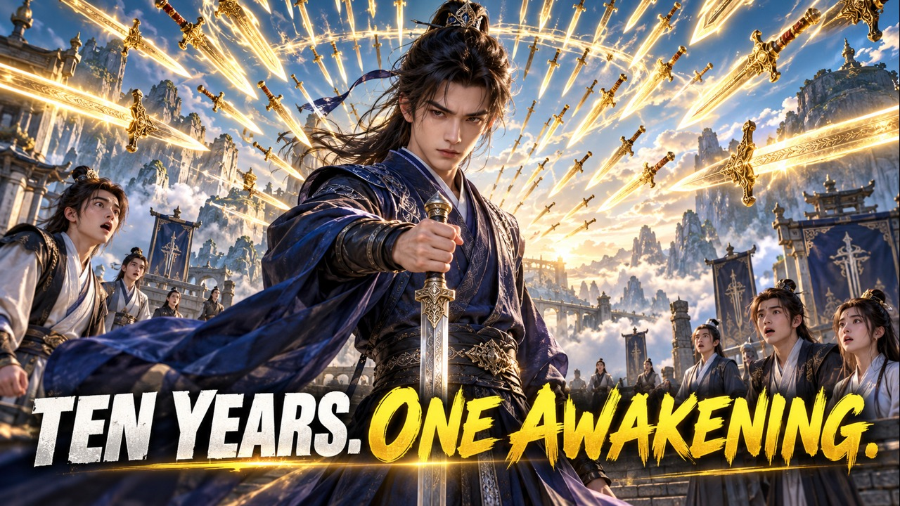

Supreme Hero Flicks · 8条素材审核Supreme Hero Flicks
排片素材审核包
2026年10月22日—25日 · 8条排片 · 24个英语标题 · 20张独立AI封面
本批依据资源表大纲制作，非真实剧照；未完成实时热门频道数据研究。北京时间17:00/21:00，过期时间不得自动补发。所有内容待你审核，尚未上传或修改频道。
下载标题审核表 CSV · 封面可逐张下载，已适配为1280×720 JPEG。审核后再上传。
2026-10-22T17:00:00+08:00 · 7ff1ce4d989eebf9师娘送我出狱我横扫天下
代码：2026 WW17
- They Destroyed His Family. Six Years Later, He Walked Out of Prison
- Five Masters Trained Him. Now No One Can Stop His Revenge
- He Returned from Prison—and Crashed the Wedding to Save His Fiancee
出狱归来与救未婚妻的强冲突
下载封面 JPEG 
2026-10-22T21:00:00+08:00 · ffcc3b2f725eb070太初神帝
代码：2026 WW44
- The Man Who Looks Half-Asleep Is the Emperor Who Freed Humanity
- He Walked Away from a Divine Throne. No One Guessed Who He Was
- A Quiet Young Man Hid the Power of Humanity's Only God Emperor
慵懒普通外貌与万古神帝的反差
下载封面 JPEG 2026-10-23T17:00:00+08:00 · 84eead742b9a69f3全球通缉：开局五星级越狱
代码：2026 WW41
- They Locked Him in Maximum Security. His Escape Was Just the Beginning
- The World's Best Hunters Came for Him. He Turned the Chase into a Show
- A Fugitive System Made Him Uncatchable—and the Whole World Was Watching
直播追逃与系统越狱的博弈悬念
下载封面 JPEG 2026-10-23T21:00:00+08:00 · ca70ba19367e1d41纵横商海：被校花撞飞后，我苟成了世界首富
代码：2026 WW47
- One Accident Let Him See Hidden Treasures—and Everyone's Future Fortune
- He Could Spot Every Fake. Quietly, He Became the World's Richest Man
- A Campus Accident Changed His Eyes. Now No Fortune Could Stay Hidden
透视鉴宝和预知气运带来的财富上升
下载封面 JPEG 
2026-10-24T17:00:00+08:00 · 5936e0e3055e29de被换灵骨后我成了大帝
代码：2026 WW48
- His Family Stole His Spirit Bones. They Never Knew an Emperor Would Return
- Betrayed by His Own Family, He Awakened an Ancient Emperor's Soul
- They Took His Sword Power. Her Sacrifice Awakened Something Far Greater
家族夺骨背叛与大帝觉醒
下载封面 JPEG 2026-10-24T21:00:00+08:00 · dde9541d385a35b4满级枪神回都市开局领证
代码：2026 WW54
- He Came Back for a Diploma—and a Marriage. No One Knew He Was the Gun God
- They Kidnapped His Wife. The World's Most Feared Gunman Came Alone
- A Quiet Graduate Returned to Town. His Secret Terrified Every Enemy
毕业领证日常与顶级枪神身份反差
下载封面 JPEG 
2026-10-25T17:00:00+08:00 · c62a252a45b17666我剑即天威
代码：2026 WW60
- Ten Years as a Failure—One Sword System Made Every Blade Bow to Him
- They Mocked His Broken Talent. Then Ten Thousand Swords Answered
- One Basic Sword Move Became His Path from Outcast to Prodigy
废体十年与剑法万倍增幅的逆袭
下载封面 JPEG 2026-10-25T21:00:00+08:00 · f3152002554769fe我的女友竟然是偶像歌手
代码：2026 WW40
- He Only Wanted a Quiet Music Career. The Campus Star Confessed on Live TV
- His Songs Took Over the Music World—Then the Star Singer Chose Him
- A Low-Key Producer Wrote the Hits. No One Expected Her Public Confession
幕后低调音乐人与歌手公开表白的情感反差
下载封面 JPEG